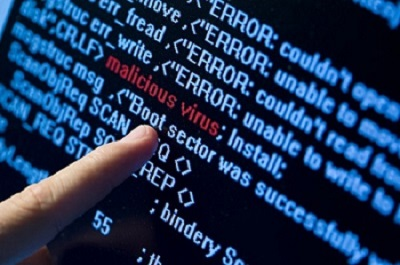
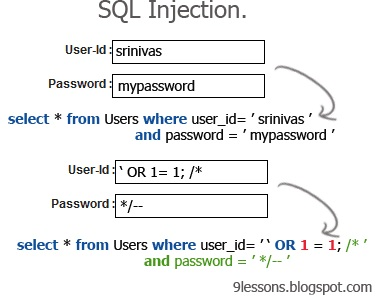
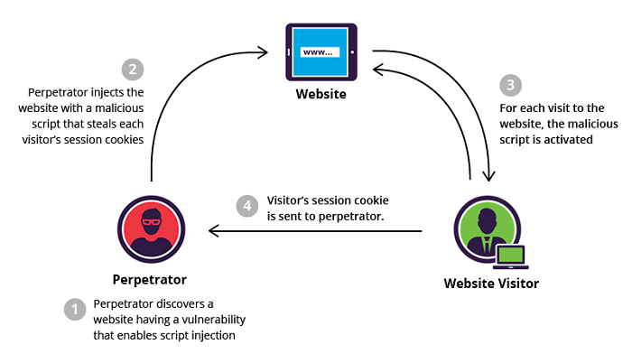

Dans le domaine de la sécurité informatique, une vulnérabilité ou faille est
une faiblesse dans un système informatique permettant à un attaquant de porter
atteinte à l'intégrité de ce système, c'est-à-dire à son fonctionnement normal,
à la confidentialité ou à l'intégrité des données qu'il contient.
Ces vulnérabilités sont la conséquence de faiblesses dans la conception,
la mise en œuvre ou l'utilisation d'un composant matériel ou logiciel du système,
mais il s'agit souvent d'anomalies logicielles liées à des erreurs de programmation ou
à de mauvaises pratiques.
Ces dysfonctionnements logiciels sont en général corrigés
à mesure de leurs découvertes, mais l'utilisateur reste exposé à une éventuelle
exploitation tant que le correctif (temporaire ou définitif) n'est pas publié et
installé. C'est pourquoi il est important de maintenir les logiciels à jour avec les
correctifs fournis par les éditeurs de logiciels. La procédure d'exploitation d'une
vulnérabilité logicielle est appelée exploit.
Les vulnérabilités informatiques proviennent
souvent de la négligence ou de l'inexpérience
d'un programmeur. Il peut y avoir d'autres causes liées au contexte comme l'évolution des technologies,
notamment en cryptographie. Une vulnérabilité permet généralement à l'attaquant de duper l'application,
par exemple en outrepassant les vérifications de contrôle d'accès ou en exécutant des commandes sur le
système hébergeant l'application.
Quelques vulnérabilités surviennent lorsque l'entrée d'un utilisateur n'est pas contrôlée,
permettant l'exécution de commandes ou de requêtes SQL (connues sous le nom d'injection SQL).
D'autres proviennent d'erreurs d'un programmeur lors de la vérification des buffers de données
(qui peuvent alors être dépassés), causant ainsi une corruption de la pile mémoire (et ainsi permettre
l'exécution de code fourni par l'attaquant).
Il n’existe malheureusement que peu de façons de se protéger devant des failles d’une telle nature, et seule une excellente hygiène numérique est en mesure de limiter les risques.
Une injection SQL est un type d'exploitation d'une faille de sécurité
d'une application interagissant avec une
base de données. L'attaquant détourne les requêtes en y injectant une chaîne non prévue par le développeur et
pouvant compromettre la sécurité du système.
C'est un cas particulier d'un type de vulnérabilité plus général qui peut se manifester lorsqu'un langage est
imbriqué dans un autre.
Lorsqu'on évoque l'injection SQL, on parle tout le temps de faille dans un site Web, mais il n'y a pas que les
sites qui sont touchés par cette faille: n'importe quelle application dialoguant avec une base de données en
utilisant des requêtes sur lesquelles l'utilisateur a une influence peut être vulnérable aux injections SQL.
Quand cette attaque réussit, elle peut avoir des conséquences désastreuses sur le site Web comme par exemple:
Cliquer ici pour apprendre à ce protéger de cette attaque.
Une vulnérabilité de type Cross Site Scripting, injection de code
indirecte en français, est exploitable sur
les serveurs web ou sur les applications web qui publient du texte fourni par le visiteur sans l’avoir filtré.
Un utilisateur malintentionné peut, en utilisant cette vulnérabilité, insérer du code dans une page HTML
renvoyée dynamiquement par le serveur.
Ce code est généralement écrit dans un langage de script (par exemple
JavaScript ou VBscript) qui est interprété par le navigateur de la victime.
Le terme anglais Cross Site Scripting est abrégé en XSS car l’acronyme CSS est déjà utilisé dans le monde du
web pour Cascading Style Sheet.
L'exploitation d'une faille de type XSS permettrait à un intrus de réaliser les opérations suivantes :
Plusieurs techniques permettent d'éviter le XSS :
Il existe des bibliothèques qui permettent de filtrer efficacement du contenu balisé issu de l'utilisateur
(systèmes de publication).
Par ailleurs, il est également possible de se protéger des failles de type XSS à l'aide d'équipements réseaux
dédiés tels que les pare-feux applicatifs. Ces derniers permettent de filtrer l'ensemble des flux HTTP afin de
détecter les requêtes suspectes.
En informatique, un dépassement de tampon ou débordement de tampon (en anglais, buffer overflow) est un bug
par lequel un processus, lors de l'écriture dans un tampon, écrit à l'extérieur de l'espace alloué au tampon,
écrasant ainsi des informations nécessaires au processus.
Lorsque le bug se produit, le comportement de l'ordinateur devient imprévisible. Il en résulte souvent un
blocage du programme, voire de tout le système.
Le bug peut aussi être provoqué intentionnellement et être exploité pour violer la politique de sécurité d’un
système. Cette technique est couramment utilisée par les pirates. La stratégie de l'attaquant est alors de
détourner le programme bugué en lui faisant exécuter des instructions qu'il a introduites dans le processus.
Une vulnérabilité de ce type permet d'écrire des données au delà du tampon qui leur est alloué. Avec le langage C, cela peut typiquement se produire lorsque des fonctions telles que gets (lecture d'une suite de caractères sur le flux d'entrée standard) ou strcpy (copie d'une chaîne de caractères), qui ne contrôlent pas le nombre de caractères écrits en mémoire, sont appelées sur des entrées non fiables. Il devient alors possible pour l'attaquant de modifier les variables situées à la suite du tampon.
Sur la plupart des architectures de processeurs, l'adresse de retour d'une fonction est stockée dans la pile d'exécution. Lorsqu'un dépassement se produit sur un tampon situé dans la pile d'exécution, il est alors possible d'écraser l'adresse de retour de la fonction en cours d'exécution. L'attaquant peut ainsi contrôler le pointeur d'instruction après le retour de la fonction, et lui faire exécuter des instructions arbitraires, par exemple un code malveillant qu'il aura introduit dans le programme. Attaques spécifiques
Des vulnérabilités de dépassement de tampons peuvent exister dans des programmes dans lesquels l'adresse de retour est protégée (par exemple par le Stack-Smashing Protector), ou exister ailleurs que la pile d'exécution. Dans certains cas, elles peuvent tout de même être exploitées pour mettre à mal la sécurité du programme, par exemple en écrasant d'autres pointeurs que le pointeur d'instruction, ou en modifiant des données spécifiques du programme pour en altérer la logique.
Afin d’éviter ces dépassements, certaines fonctions ont été réécrites pour prendre en paramètre la taille du tampon dans lequel les données sont copiées, et éviter ainsi de copier des informations à l'extérieur du tampon. Ainsi strlcpy est une version de strcpy qui tient compte de la taille du tampon. De même, fgets est une version de gets prenant en compte la taille du tampon1. Les fonctions strlcpy et strlcat ont été initialement disponibles sous OpenBSD et elles tendent à se répandre dans divers logiciels comme rsync et KDE.
La FIFA et l'UEFA longtemps questionner sur des sujets dans des document confidentiels Les fuite de 2015 on entrainer de nombreuse poursuite contre des stars du football (Cristiano Ronaldo et José Mourinho) En 2017 se serait des pirate du kremelin qui les aurait attaquer Source ZDNET
Vulnérabilité dans Wallix AdminBastion Source CERT-FR
Sécurité informatique : 26 % des entreprises manquent de temps pour appliquer les correctifs en matière de securité Source Developpez.com